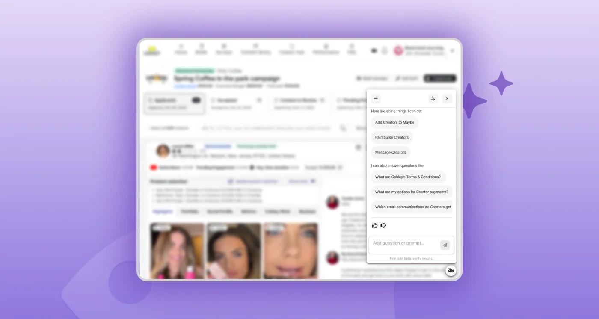
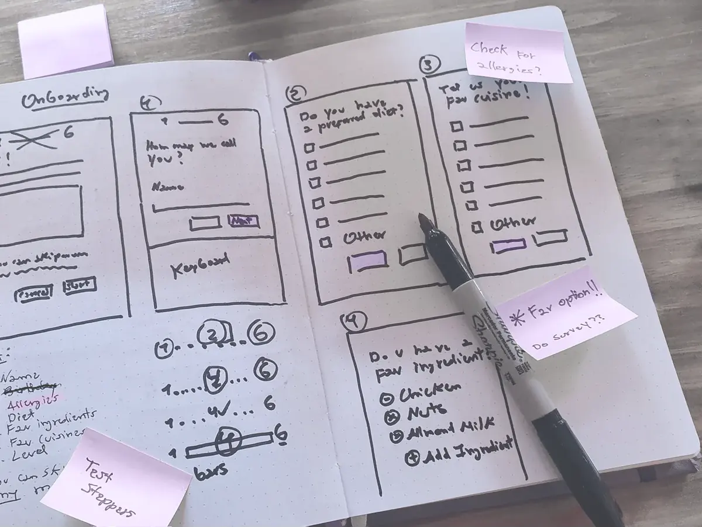
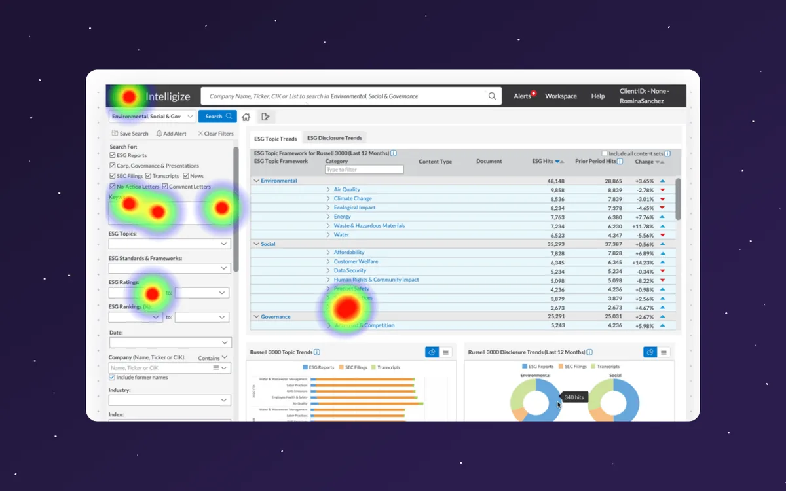
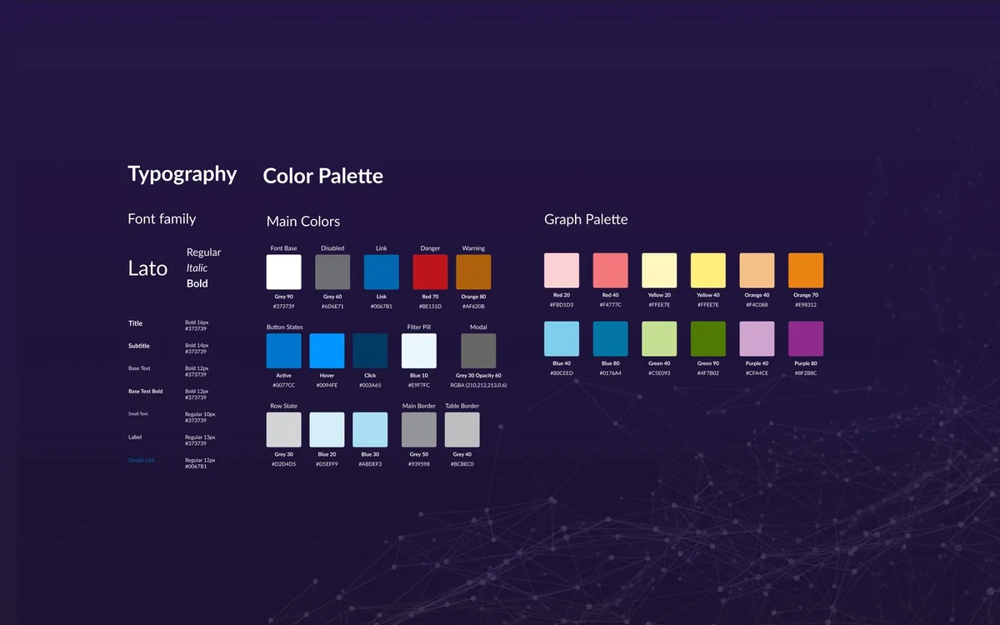
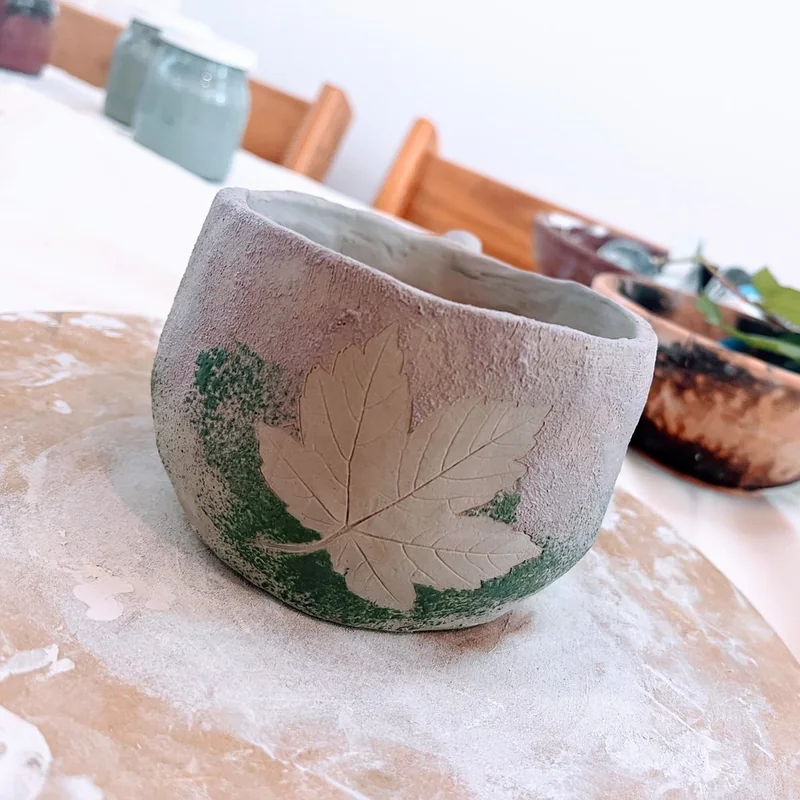
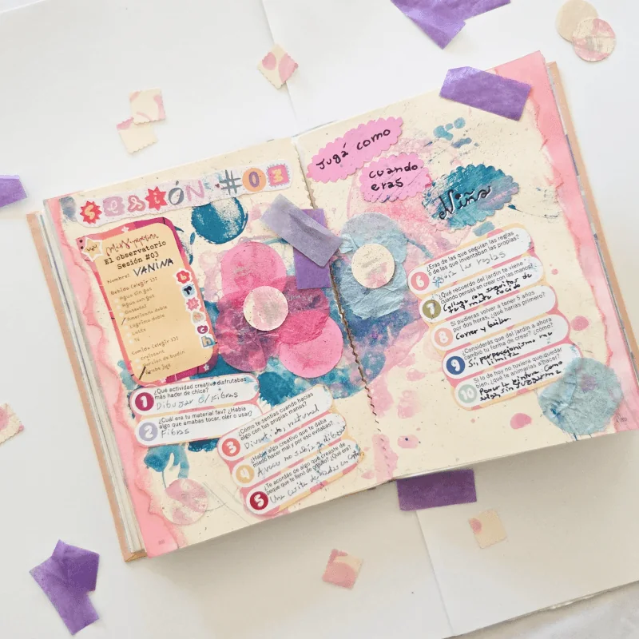
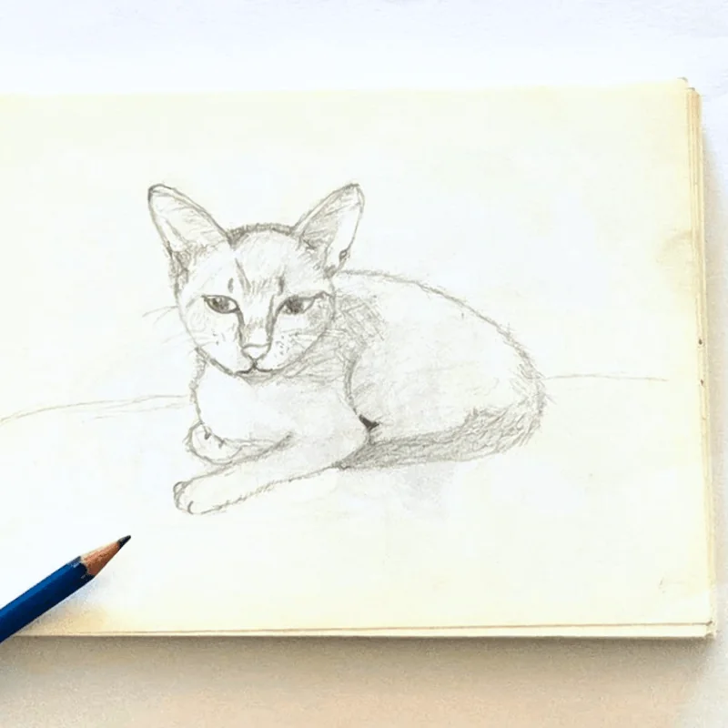

Designing an AI Agent That Gets Things Done
UX/UI design for an influencer and UGC content platform.
100%task completion in testing
65%time gain reported by clients
Senior Product Designer · Argentina

As a senior designer with business and coding roots, I thrive in data-dense products, turning tangled requirements into simple flows that hit business goals.

UX/UI design for an influencer and UGC content platform.

Research-led launch that became the best-selling app.

Replaced Power BI with an in-house charting feature.

One design system shared across the compliance product suite.
I started in marketing and moved into design in 2016. That keeps me grounded in business goals as well as user needs.
Away from the screen, I enjoy creating art, from drawing to ceramics and mixed media, and doing yoga and writing short stories, with my cats as (somewhat unreliable) sidekicks.
Based in Argentina · English (C2) · French (bilingual)
Industries I've designed for
Artsy hobbies I enjoy



Open to senior and lead product design roles. Write to me, or take my CV and read the details.